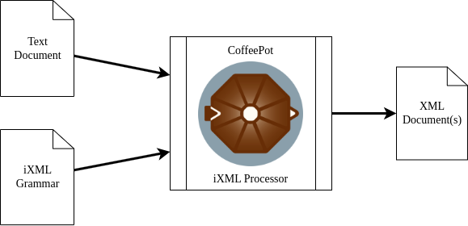

The specification for Invisible XML (iXML) describes it as “a method for treating non-XML documents as if they were XML”[IXML]. On Invisible XML, where the spec is hosted, it expands that definition slightly: “Invisible XML is a language for describing the implicit structure of data, and a set of technologies for making that structure explicit as XML markup.”[IMCG]
In practice, this means that if a document or dataset has a regular enough structure that you can write down the rules to parse it (an iXML grammar), then you should be able to use an iXML processor (such as CoffeePot) to apply the grammar to the document or dataset in order to convert it to XML (see Figure 1, “High-level overview of an iXML conversion”).
Figure 1. High-level overview of an iXML conversion
|  |